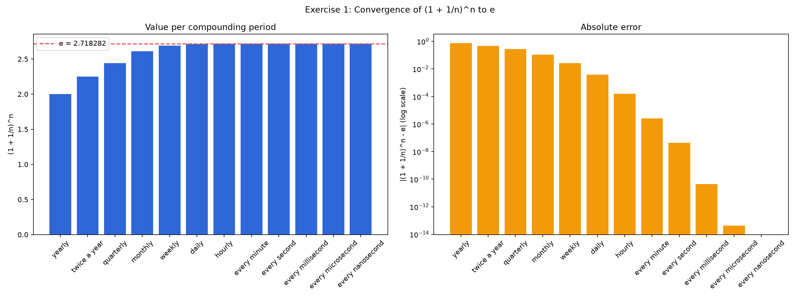
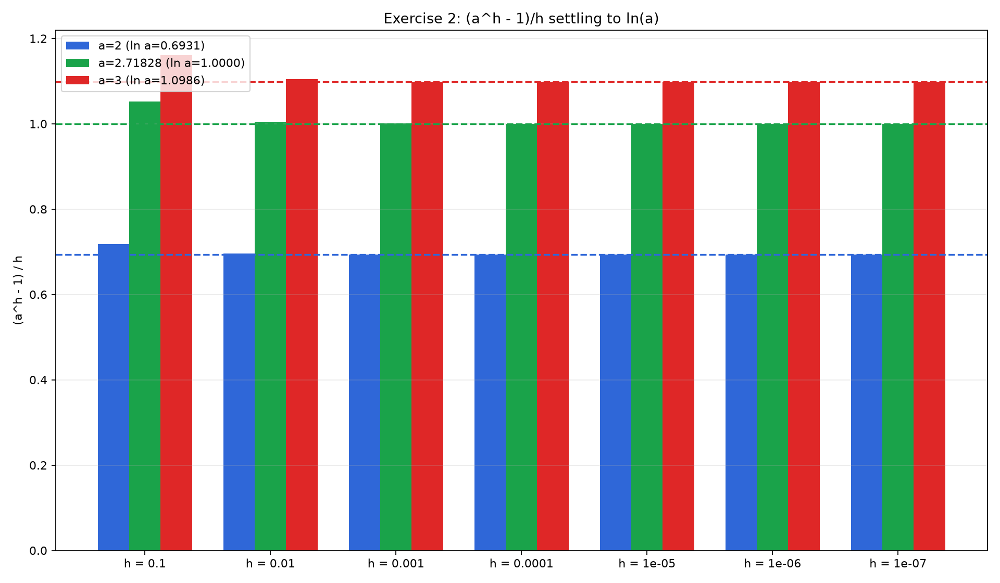
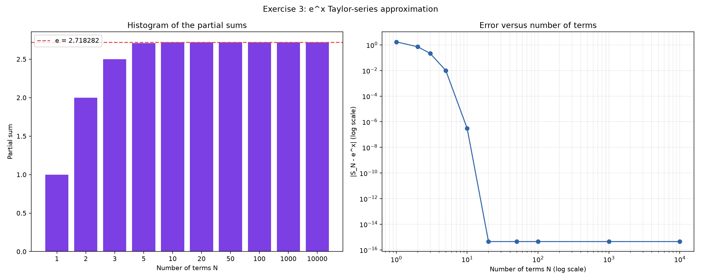

What the project is about
Implementing mathematical formulas in Python, then presenting the calculated values and graphs in a dashboard that can be read without opening the source code.
Laboratory exercise / numerical methods
This dashboard turns the Python calculations into a readable record of approximation: compound periods approach e, a difference quotient approaches ln(a), and a Taylor series approaches ex.
The project uses small, transparent numerical experiments to connect formulas with computation. Each exercise changes a parameter, records the result, and makes the limiting behavior visible.
Implementing mathematical formulas in Python, then presenting the calculated values and graphs in a dashboard that can be read without opening the source code.
Convergence is not just an abstract limit. The tables show the numerical path, while the plots show how quickly the approximation improves.
These ideas support compound growth models, logarithmic derivatives, exponential functions, scientific computing, and decisions about numerical accuracy.
Compound more frequently and observe the value move toward Euler's number.
Given compounding frequencies from yearly through nanosecond.
Calculate the compound-frequency approximation for each given number of periods.
Variable: n, the number of compounding periods per year.
Reference: e = 2.718281828459...
As n increases, the expression approaches the constant e.
The script evaluates the formula for every listed frequency and calculates the absolute error from e.

Reduce the step size and observe a difference quotient settle at a logarithm.
Three bases are compared as the dimensionless step h shrinks.
Evaluate the difference quotient for each base and decreasing value of h.
Bases: a = 2, 2.71828..., and 3.
Tolerance: 10-6.
The limit as h approaches zero is ln(a).
The script compares each calculated quotient with its reference value ln(a) and records the absolute error.

Add Taylor-series terms until the exponential approximation reaches floating-point precision.
The reference case uses x = 1 and sums through 10,000 terms.
Calculate partial sums of the exponential Taylor series for increasing numbers of terms.
Input: x = 1.
Maximum: 10,000 Taylor-series terms.
Each added term contributes xn/n! to the partial sum.
The implementation updates each term from the previous one, avoiding repeated factorial calculation, and records the error from ex.

The important limiting results from all three exercises.